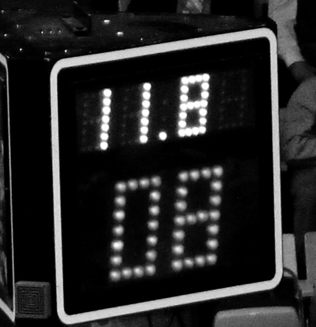
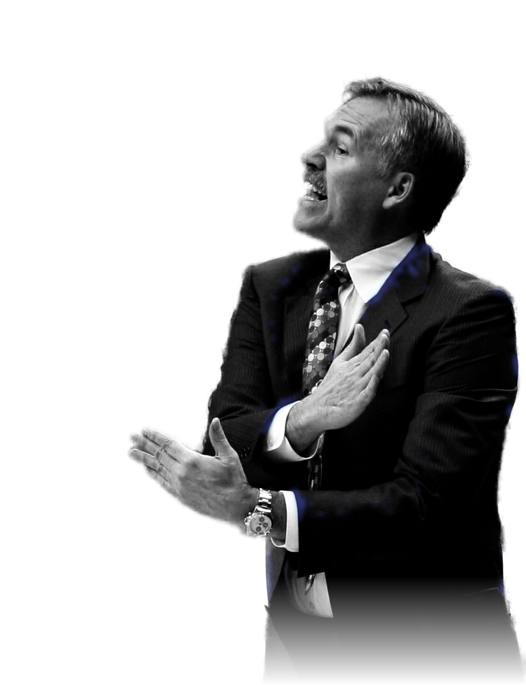
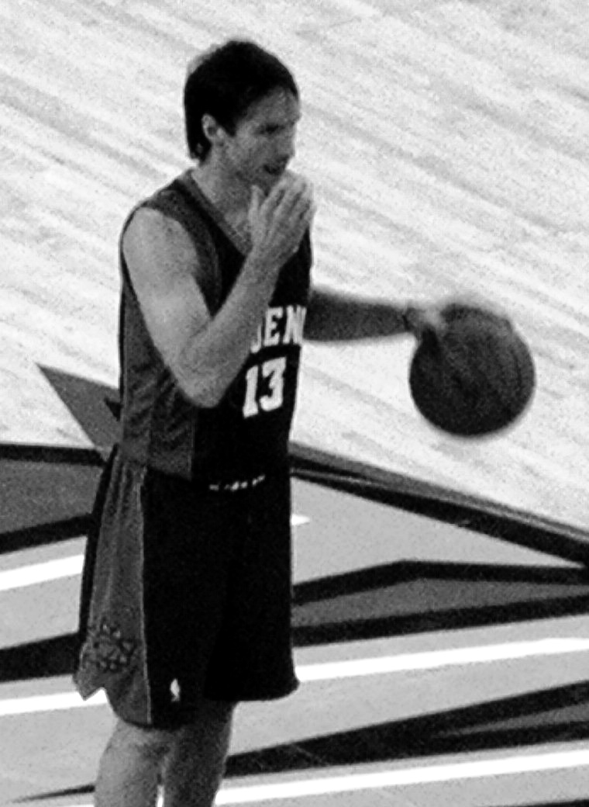

UN RELOJ DE POSESIÓN
Foto: TonyTheTiger · CC BY-SA 3.0 · reloj dibujado: recreación
CLASIFICACIÓN 2003-04 · RECREACIÓN
29 victorias · 53 derrotas · NBA.com

ENTRENADORMIKE D'ANTONI
Foto: Keith Allison, 2007 · CC BY-SA 2.0

STEVE NASH · BASE
Foto: BrokenSphere, 2009 · CC BY-SA 3.0
29
PHOENIX SUNS · 2004-05
62–20
MEJOR BALANCE DE LA NBA
«Solo queríamos
llegar a playoffs».
Mike D'Antoni · ESPN, 2026
7
Fotos: Keith Allison (CC BY-SA 2.0), BrokenSphere (CC BY-SA 3.0) y TonyTheTiger (CC BY-SA 3.0),
modificadas, vía Wikimedia Commons. Calendario, tabla, pizarra y reloj dibujado: recreación.